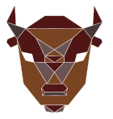

<mat-sidenav-container class="sidenav-container">
  <mat-sidenav #drawer class="sidenav" fixedInViewport="true"
               [attr.role]="(isHandset$ | async) ? 'dialog' : 'navigation'"
               [mode]="(isHandset$ | async) ? 'over' : 'side'"
               [opened]="!(isHandset$ | async)">
    <mat-toolbar>Menu</mat-toolbar>
    <mat-nav-list>
      <a mat-list-item routerLink="/hunter">My Tasks</a>
      <a mat-list-item routerLink="/projects">Projects</a>
    </mat-nav-list>
  </mat-sidenav>
  <mat-sidenav-content>
    <mat-toolbar color="primary">
      <button
        type="button"
        aria-label="Toggle sidenav"
        mat-icon-button
        (click)="drawer.toggle()"
        *ngIf="isHandset$ | async">
        <mat-icon aria-label="Side nav toggle icon">menu</mat-icon>
      </button>


      <span>BisonsUnchained: {{Tokencount}}</span>
      <span class="example-spacer"></span>
      
      <!--
           <!--alt="BisonsUnchainedLogo">-->


    </mat-toolbar>
    <h1 class="mat-h1 title">My Tasks</h1>
    <div class="list">


      <mat-selection-list #list role="list">
        <mat-list-option *ngFor="let task of Tasks">
          {{task}}
        </mat-list-option>
      </mat-selection-list>
      <p style="text-align: right; margin-right: 10px">
        Options selected: {{list.selectedOptions.selected.length}}
      </p>
      <button style="float: right; margin-right: 10px" mat-raised-button
              (tap)="Send(list.selectedOptions.selected.length)"> Commit
      </button>
    </div>

    <!-- Add Content Here -->
  </mat-sidenav-content>
</mat-sidenav-container>
